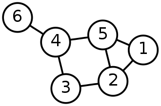
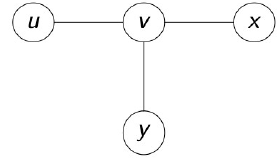
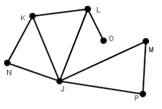

A teoria dos grafos é um ramo da matemática que estuda as relações entre os objetos de um determinado conjunto.
Para tal são empregadas estruturas chamadas de grafos
onde é um conjunto não vazio de objetos denominados vértices (ou nós) e (do inglês Edges - arestas)
é um subconjunto de pares não ordenados de .
Dependendo da aplicação, arestas podem ou não ter direção,
pode ser permitido ou não arestas ligarem um vértice a ele
próprio e vértices e/ou arestas podem ter um peso (numérico) associado.
Se as arestas têm uma direção associada (indicada por uma seta
na representação gráfica) temos um dígrafo (grafo orientado).
Um grafo com um único vértice e sem arestas é conhecido como grafo trivial.
Estruturas que podem ser representadas por grafos estão em toda parte e muitos problemas
de interesse prático podem ser formulados como questões sobre certos grafos.

Um grafo simples com seis vértices e sete arestas
Uma aresta é uma ligação entre dois vertices.
Escrevemos uma aresta como sendo um par ,
onde e são dois vértices,ou seja
. Como existe uma aresta entre esses dois vértices, dizemos que eles são vizinhos.

Vértices vizinhos
Se e na aresta , dizemos que e incidentes a .
Duas arestas são adjacentes se elas têm um extremo em
comum. Um laço (ou loop) é uma aresta cujas pontas �nais são iguais.
Arestas paralelas ou multiplas arestas são arestas que tem o
mesmo par de pontas �nais.Um grafo simples é um grafo que não contém laços ou arestas
múltiplas.Denote por o número de vértices e por o número de arestas
de um grafo .

Grau de um vértice
O grau de um vértice de um grafo é o número de arestas
incidentes a ele, exceto no laço de um vértice, pois o laço
contribui duas vezes ao grau daquele vértice.

Possui graus: